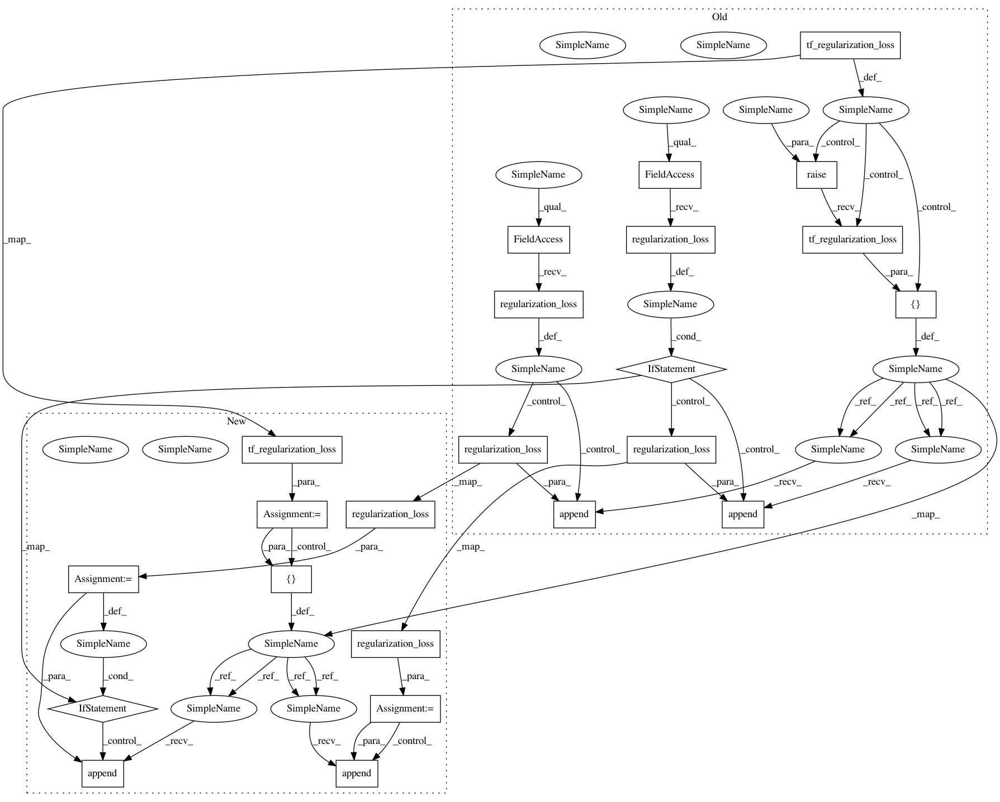

8d051d7bf2742e758f53cfb83d50ccc47f926d14,tensorforce/core/networks/layer.py,Dueling,tf_regularization_loss,#Dueling#,489
Before Change
return x
def tf_regularization_loss(self):
if super(Dueling, self).tf_regularization_loss() is None:
losses = list()
else:
losses = [super(Dueling, self).tf_regularization_loss()]
if self.linear_exp.regularization_loss() is not None:
losses.append(self.linear_exp.regularization_loss())
if self.linear_adv.regularization_loss() is not None:
losses.append(self.linear_adv.regularization_loss())
if len(losses) > 0:
return tf.add_n(inputs=losses)
else:
return None
After Change
return x
def tf_regularization_loss(self):
regularization_loss = super(Dueling, self).tf_regularization_loss()
if regularization_loss is None:
losses = list()
else:
losses = [regularization_loss]
regularization_loss = self.linear_exp.regularization_loss()
if regularization_loss is not None:
losses.append(regularization_loss)
regularization_loss = self.linear_adv.regularization_loss()
if regularization_loss is not None:
losses.append(regularization_loss)
if len(losses) > 0:
return tf.add_n(inputs=losses)
else:
In pattern: SUPERPATTERN
Frequency: 3
Non-data size: 23
Instances
Project Name: reinforceio/tensorforce
Commit Name: 8d051d7bf2742e758f53cfb83d50ccc47f926d14
Time: 2017-11-07
Author: aok25@cl.cam.ac.uk
File Name: tensorforce/core/networks/layer.py
Class Name: Dueling
Method Name: tf_regularization_loss
Project Name: reinforceio/tensorforce
Commit Name: 45f2bf3d205c63d57ff777715bca553e3c718a1a
Time: 2017-10-31
Author: aok25@cl.cam.ac.uk
File Name: tensorforce/core/distributions/beta.py
Class Name: Beta
Method Name: tf_regularization_loss
Project Name: reinforceio/tensorforce
Commit Name: 45f2bf3d205c63d57ff777715bca553e3c718a1a
Time: 2017-10-31
Author: aok25@cl.cam.ac.uk
File Name: tensorforce/core/distributions/gaussian.py
Class Name: Gaussian
Method Name: tf_regularization_loss
Project Name: reinforceio/tensorforce
Commit Name: 8d051d7bf2742e758f53cfb83d50ccc47f926d14
Time: 2017-11-07
Author: aok25@cl.cam.ac.uk
File Name: tensorforce/core/networks/layer.py
Class Name: Dueling
Method Name: tf_regularization_loss